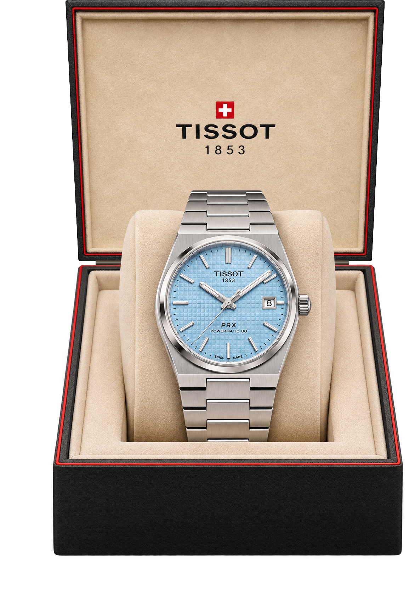
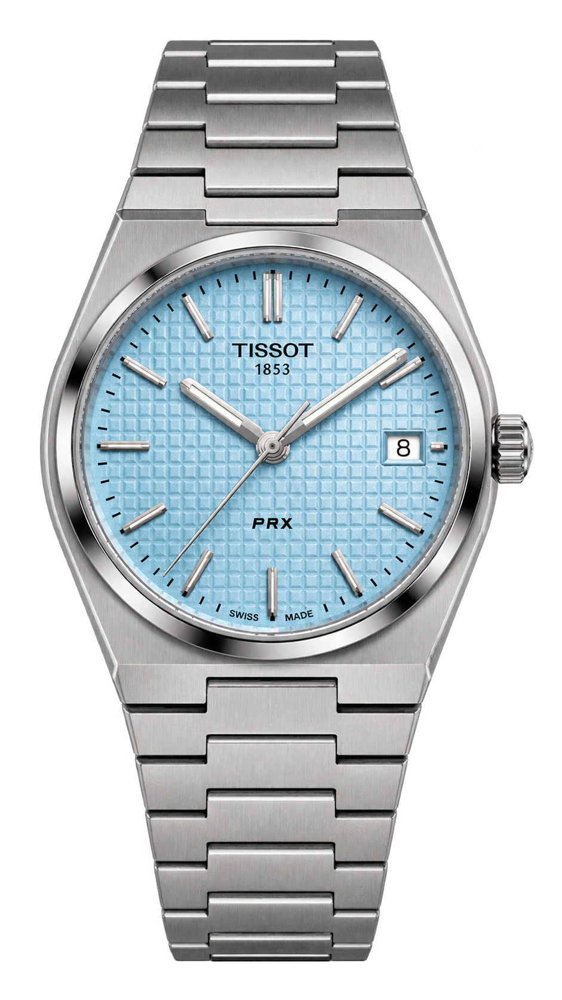

Bijoux & pierres précieuses
L'or, l'argent, l'éclat du diamant et la couleur des pierres. Des pièces à offrir, à porter et à transmettre.
Trouver votre bijou

Bijoux, montres, créations sur mesure et réparations au 18 rue Saint-Vincent.
Prendre rendez-vousFondée par Alexandre Petit en 1948, notre bijouterie familiale transmet son savoir-faire de père en fils, de Michel à Cyril Petit.
Visiter la boutiqueL'or, l'argent, l'éclat du diamant et la couleur des pierres. Des pièces à offrir, à porter et à transmettre.
Trouver votre bijou
Découvrez notre sélection de montres et bénéficiez de conseils en boutique.
Choisir votre montreCréation de bijoux sur mesure et réparation de bijoux et de montres toutes marques.
Un bijou sur mesure, imaginé avec vous et réalisé dans notre atelier.
Diamants, rubis, saphirs, émeraudes : bénéficiez de notre connaissance des pierres pour choisir votre bijou.
Apportez vos bijoux et montres en boutique pour étudier leur réparation, quelle que soit la marque.
Oui. La maison dispose d'un atelier de création et propose de fabriquer un bijou selon vos désirs. Un échange en boutique permet de préciser votre projet.
Un service de réparation de montres et de bijoux toutes marques est proposé. Contactez la boutique ou présentez votre pièce pour connaître les possibilités de prise en charge.